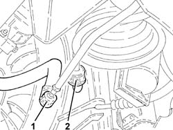
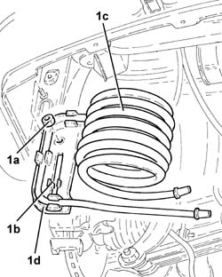
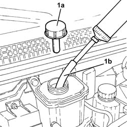
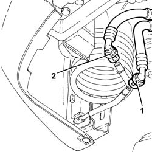
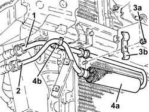

4130B52 heat exchanger pipe - r+r
- Path
- Procedures > 41 STEERING > 4130 POWER ASSISTED STEERING > 4130B power steering hydraulic sytem > 4130B52 heat exchanger pipe - r+r
- Kind
- repair procedure (removal / refitting; the operation number is the code)
- Applies to
- engines: 1.6 TS, 2.0 TS, 1.9 JTD 8V, 1.9 JTD 16V; all production periods
- Interactive page
- https://sloeber94.github.io/elrnDB-a147/en/#/3025303
Applies to: engines: 1.6 TS, 2.0 TS; all production periods
 Removing
Removing
 Refitting
RefittingPosition the vehicle on the ramp.
Remove the power steering fluid reservoir and drain the fluid using a suitable syringe.
Applies to: engines: 2.0 TS; all production periods
Proceed with removal 7055B54 under-engine guard - r r .
Applies to: engines: 1.6 TS, 2.0 TS; all production periods
1. Disconnect the quick-release fitting on the return pipe from power steering box to heat exchanger, heat exchanger side.
2. Disconnect the rapid attachment coupling from the return pipe from the heat exchanger to the power steering fluid reservoir, heat exchanger side.

Applies to: engines: 1.6 TS, 2.0 TS; all production periods
1. Undo nut (1a), undo clips (1b) and remove heat exchanger pipe (1c) complete with bracket (1d).

Applies to: engines: 1.6 TS, 2.0 TS; all production periods
Refitting
RemovingRefit the heat exchanger pipe complete with support bracket and secure using the clips and nut.
Connect the rapid attachment coupling on the return pipe from the heat exchanger to the power steering fluid reservoir, heat exchanger side.
Connect the quick-release fitting on the return pipe from power steering box to heat exchanger, heat exchanger side.
Applies to: engines: 2.0 TS; all production periods
Proceed with refitting 7055B54 under-engine guard - r r .
Applies to: engines: 1.6 TS, 2.0 TS; all production periods
Fill the power steering circuit with the recommended fluid.
 | Type | Component | Name | Qty. |
|---|---|---|---|---|
- | Oli [l] | POWER ASSISTED STEERING CIRCUIT | TUTELA GI/A | 1.2 |
Bleed the power steering system as described below
With the front wheels raised off the ground, with the engine switched off turn the steering wheel to full lock, left and right, 4-5 times.
Check and, if necessary, top up the fluid level in the reservoir.
Remove the car from the ramps.
Start the engine and carry out 4 - 5 full steering wheel turn cycles (right and left).
Top up the fluid level in the reservoir.
Applies to: engines: 1.9 JTD 8V; all production periods
Removing
RefittingPosition the vehicle on the ramp.
Proceed with removal 1016A10 sound-proofing cover - r + r .
1. remove the power steering fluid reservoir cap (1a) and drain the fluid using a suitable syringe (1b).

Applies to: engines: 1.9 JTD 8V; all production periods
Proceed with removal 7055B54 under-engine guard - r r .
1. Disconnect the quick-release fitting on the return pipe from power steering box to heat exchanger, heat exchanger side.
2. Disconnect the rapid attachment coupling from the return pipe from the heat exchanger to the power steering fluid reservoir, heat exchanger side.

Applies to: engines: 1.9 JTD 8V; all production periods
1. Undo nut (1a), undo clips (1b) and remove heat exchanger pipe (1c) complete with bracket (1d).
Applies to: engines: 1.9 JTD 8V; all production periods
Refitting
RemovingRefit the heat exchanger pipe complete with support bracket and secure using the clips and nut.
Connect the rapid attachment coupling on the return pipe from the heat exchanger to the power steering fluid reservoir, heat exchanger side.
Connect the quick-release fitting on the return pipe from power steering box to heat exchanger, heat exchanger side.
Proceed with refitting 7055B54 under-engine guard - r r .
Refill the power assisted steering circuit using the recommended fluid.
| Type | Component | Name | Qty. |
|---|---|---|---|---|
- | Oli [l] | POWER ASSISTED STEERING CIRCUIT | TUTELA GI/A | 1.2 |
Bleed the power steering system as described below
With the front wheels raised off the ground, with the engine switched off turn the steering wheel to full lock, left and right, 4-5 times.
Check and, if necessary, top up the fluid level in the reservoir.
Remove the car from the ramps.
Start the engine and carry out 4 - 5 full steering wheel turn cycles (right and left).
Top up the fluid level in the reservoir.
Proceed with refitting 1016A10 sound-proofing cover - r + r .
Applies to: engines: 1.9 JTD 16V; all production periods
Removing
RefittingPosition the vehicle on the ramp.
Proceed with removal 4450B12 front or rear wheels (two) - r+r .
Proceed with removal 7055B54 under-engine guard - r r .
Proceed with removal 7055B64 Engine compartment DUST shield in front wheel arch (one), left or right - R.R. .
Proceed with removal 7055B42 Additional FRONT WHEEL ARCH (one), left or right - R.R. .
Proceed with removal 7210E10 R.R. CENTRE PILLAR .
Proceed with removal 1084C40 Air DUCT for engine oil cooling radiator - R.R . .
1. Disconnect the rapid attachment coupling from the return pipe from the heat exchanger to the power steering fluid reservoir, heat exchanger side.
2. Disconnect the quick-release fitting on the return pipe from power steering box to heat exchanger, heat exchanger side.
3. Undo the nut (3a) and remove the bracket (3b) for the heat exchanger fastening pipe.
4. Remove the heat exchanger pipe (4a) after releasing it from the fastening (4b).

Applies to: engines: 1.9 JTD 16V; all production periods
Refitting
RemovingRefit the heat exchanger pipe in its seating.
Refit the heat exchanger pipe mounting bracket in its seating and tighten the nut.
Connect the quick-release fitting on the return pipe from power steering box to heat exchanger, heat exchanger side.
Connect the rapid attachment coupling on the return pipe from the heat exchanger to the power steering fluid reservoir, heat exchanger side.
Proceed with refitting 1084C40 Air DUCT for engine oil cooling radiator - R.R . .
Proceed with refitting 7210E10 R.R. CENTRE PILLAR .
Proceed with refitting 7055B42 Additional FRONT WHEEL ARCH (one), left or right - R.R. .
Proceed with refitting 7055B64 Engine compartment DUST shield in front wheel arch (one), left or right - R.R. .
Proceed with refitting 7055B54 under-engine guard - r r .
Proceed with refitting 4450B12 front or rear wheels (two) - r+r .
Refill the power assisted steering circuit using the recommended fluid.
| Type | Component | Name | Qty. |
|---|---|---|---|---|
- | Fluid [l] | HYDRAULIC POWER ASSISTED STEERING SYSTEM | TUTELA GI/A | 1.2 |
Bleed the power steering system as described below
With the front wheels raised off the ground, with the engine switched off turn the steering wheel to full lock, left and right, 4-5 times.
Check and, if necessary, top up the fluid level in the reservoir.
Remove the car from the ramps.
Start the engine and carry out 4 - 5 full steering wheel turn cycles (right and left).
Top up the fluid level in the reservoir.
Topics linked from this page (7)
- 1016A10 sound-proofing cover - r + r
- 1084C40 Air DUCT for engine oil cooling radiator - R.R .
- 4450B12 front or rear wheels (two) - r+r
- 7055B42 Additional FRONT WHEEL ARCH (one), left or right - R.R.
- 7055B54 under-engine guard - r r
- 7055B64 Engine compartment DUST shield in front wheel arch (one), left or right - R.R.
- 7210E10 R.R. CENTRE PILLAR